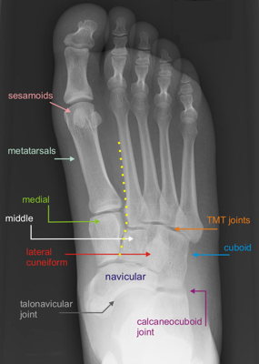

- Böhler's angle: measured as the angle subtended by two lines - one between the superior-most aspect of the anterior
process to the superior-most aspect of the posterior articular surface and from the superior-most aspect of the posterior
articular surface to the posterior tuberosity
- The supplement of this angle is normally between 25°-40°
- Lower supplements indicate collapse of the posterior facet and correlate with worse outcome
- Gissane's (crucial) angle: formed by the angle subtended by a line along the posterior facet and another along the
beak of the calcaneus
- Normally 100°
- Increase in angle indicates collapse of the posterior facet
Angles of Böhler and Gissane
- Visualizes the subtalar joint, loss of calcaneal height, widening and impingement on the peroneal space laterally

Normal AP foot: yellow dotted line highlights normal TMT joint alignment
 Normal lateral foot
Normal lateral foot
Normal Harris view